Torba — a checkout with no surprise at the end
- Role
- UI/UX & Product Designer
- Platform
- Mobile web
- Domain
- Food deliverySubscriptions
- Team
- Solo concept
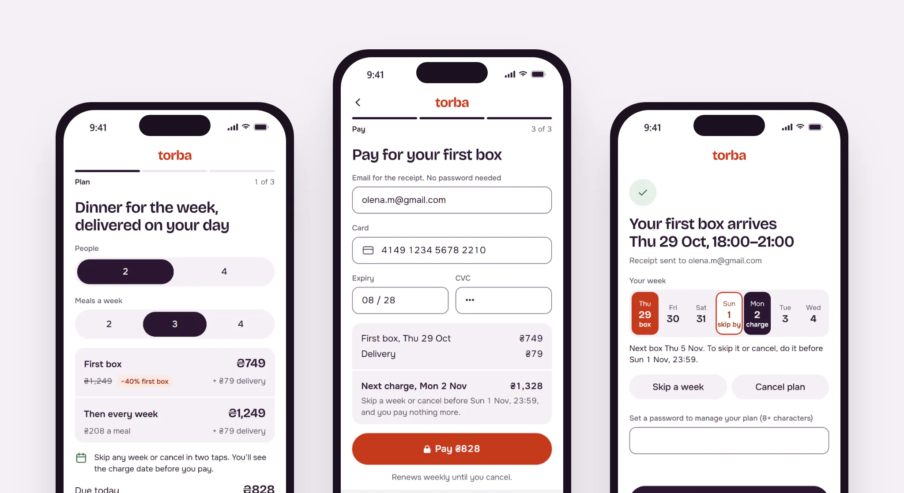
- Problem
- Only 31.4% of people who started checkout paid for a first box. Most left at payment, where the weekly price first appeared.
- What I did
- Analysed the funnel, audited the flow, ranked four hypotheses, cut checkout from five steps to three and ran a usability test and an A/B test.
- Result
- Checkout conversion rose from 31.4% to 33.5% (+2.1 points). Early cancellations fell. The address hypothesis failed.
Torba delivers weekly meal kits in Kyiv, Lviv and Dnipro. I redesigned the checkout new customers go through on their phones.
Concept. Product, users and data are fictional.
Context
78% of checkouts start in a phone browser: people arrive from ads and search, and install the app only after the first order. So the funnel lives on the web. The old checkout had five steps: plan, account, address, delivery day, payment. The growth lead’s brief: “More paid first boxes, without buying them with cancellations in week two.”
This is a solo concept, written the way it would run in a team: a growth PM, an analyst, two engineers and me. I ran the analysis with the analyst, the audit, the hypotheses, the design, the usability test and the A/B plan. Six weeks, including the test.
Constraints
- Cards only this quarter. The payment provider adds Apple Pay and Google Pay next quarter.
- The “−40% first box” ads keep running. Marketing owns the offer; checkout has to carry it.
- One A/B slot, two weeks. About 1,250 checkout starts a day on mobile web.
- The delivery-zone check runs on the server after the address is submitted.
Process
The funnel showed where people leave; replays and a survey showed why. We took 28 days of mobile-web data: 35,000 checkout starts, 31.4% paid. Payment lost the most, 28.6 points; the account step lost 22.
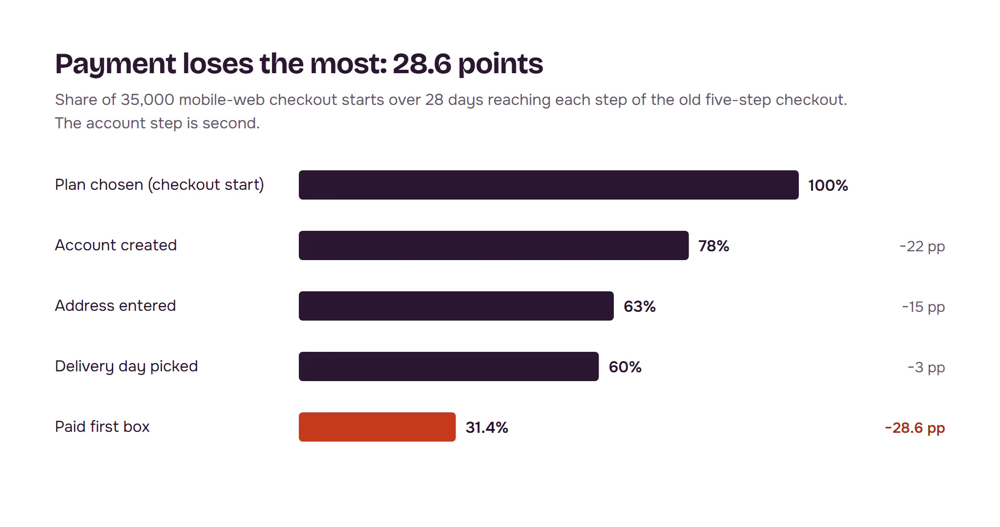
People leave over money and commitment, not the form. In 60 session replays, 21 people went back from payment to the plan step to re-check the price, then left. A one-question exit survey got 640 answers: 36% said the total was higher than expected, 23% didn’t know how to skip or cancel, 18% didn’t want an account.
“749 on the banner, 828 at the end, and then it says 1,249 every week? I closed it.”
Survey comment
The audit found 14 issues, 5 severe. Four of the five sat on account and payment: the weekly price first shown at the end, a password before anything useful, renewal terms behind a link to a 9-screen page, a card form the browser couldn’t fill. The fifth was a generic “Check your address” error.
Hypotheses, ranked by ICE. Price upfront, a concrete skip-and-cancel promise, guest checkout and a one-screen address with autocomplete went into one test. Wallets wait for the provider. A countdown on the discount was rejected: a dark pattern that would hurt the retention guardrail.
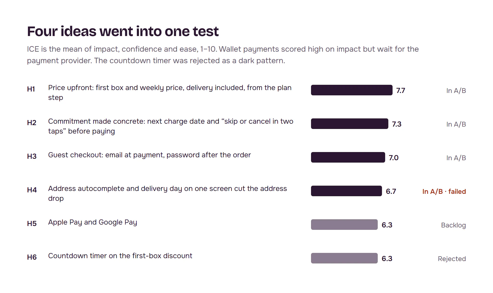
Key decisions
How do we show the price?
Options: the promo price alone, as today; the promo price with the weekly price in small print; or both prices at the same size from the first step. Chose both: small print fails the same way, just later. Cost: “−40%” loses its punch, and promo-ad traffic might convert worse.
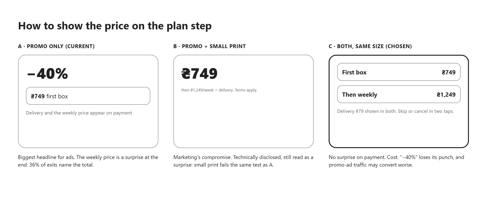
Where do we ask for an account?
Options: account first, as today; social login first; or guest checkout with the email on the payment step and a password after the order. Chose guest checkout: no gate before people see days and prices. Cost: we get the email later, so fewer abandoned-checkout emails can go out.
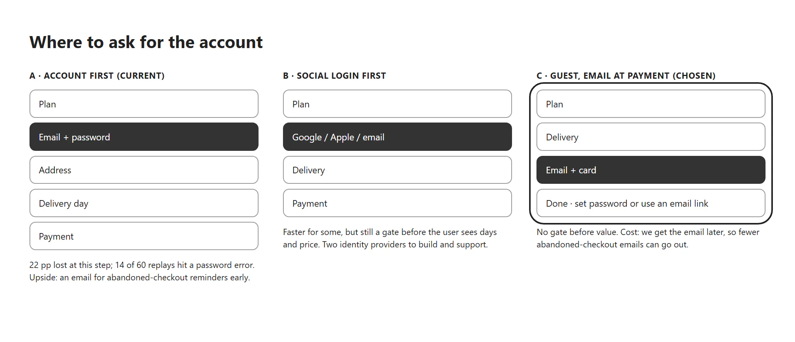
One change at a time, or the whole flow?
Options: four single tests, about 16 weeks at this traffic; a multivariate test, which needs several times the traffic; or one bundled treatment with a step metric per hypothesis. Chose the bundle. Cost: no clean credit for each change. The step metrics turned out to matter most: they caught the hypothesis that failed.
Three steps, one price from start to end
The plan step shows the first box and every week after it at the same size, delivery included, and the total due today. Delivery puts the address, flat details and day on one screen. Payment asks for an email and a card, and shows the next charge date and the skip deadline above the button. The password comes after the order, or never: a login link works too.
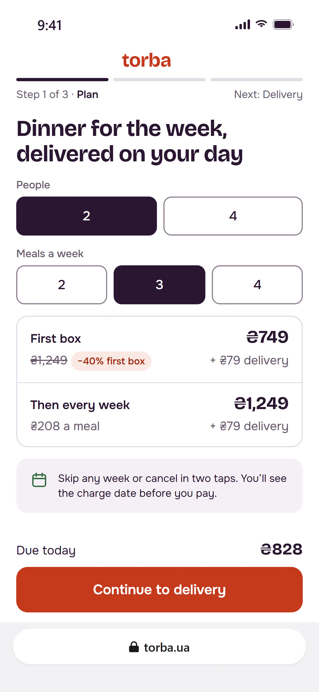
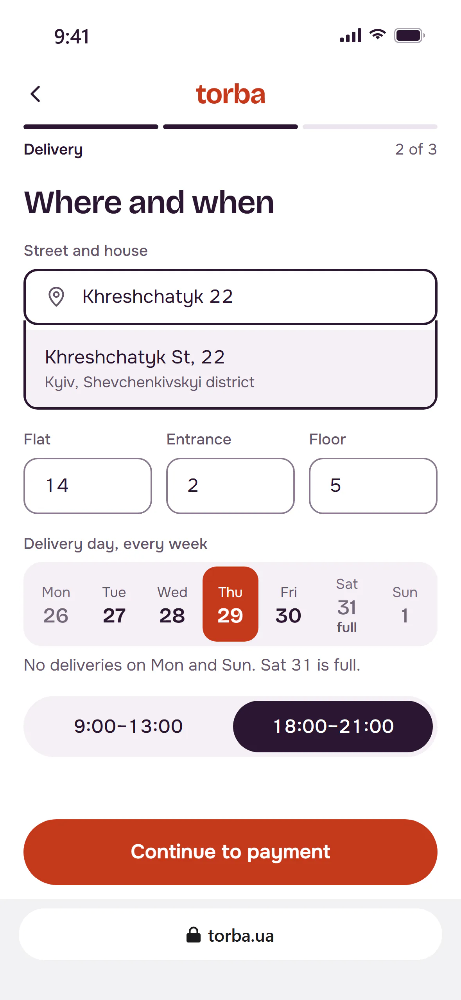
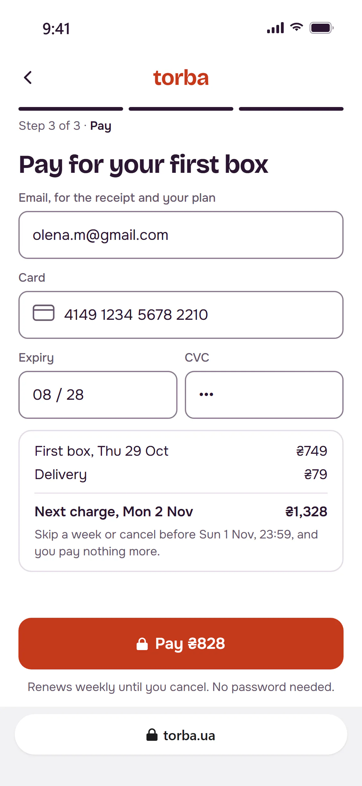
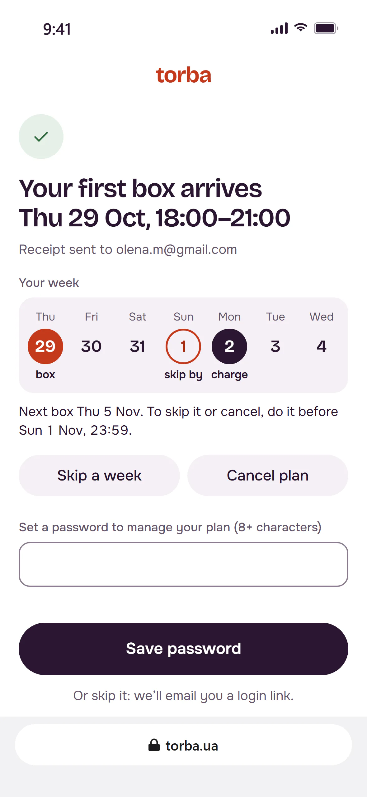
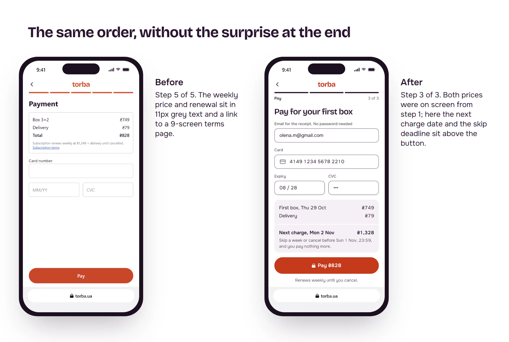
The week strip: when you get it, when you pay
The one memorable element is the week strip: seven days on one row. On the delivery step it picks the day. After payment it shows the week ahead: the box on Thursday, the last day to skip on Sunday, the charge on Monday. Each state has a word, not just a colour. Everything around it stays quiet: white, aubergine ink, one tomato colour for actions. Bricolage Grotesque sets headings and prices; Onest sets the rest. Every text pair passes WCAG AA, checked by a script.
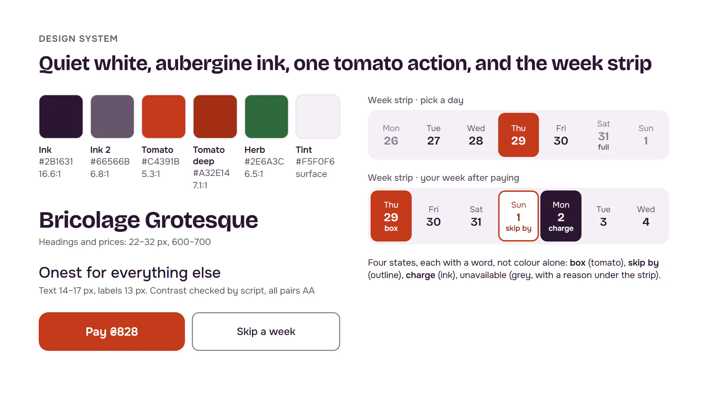
States and edge cases
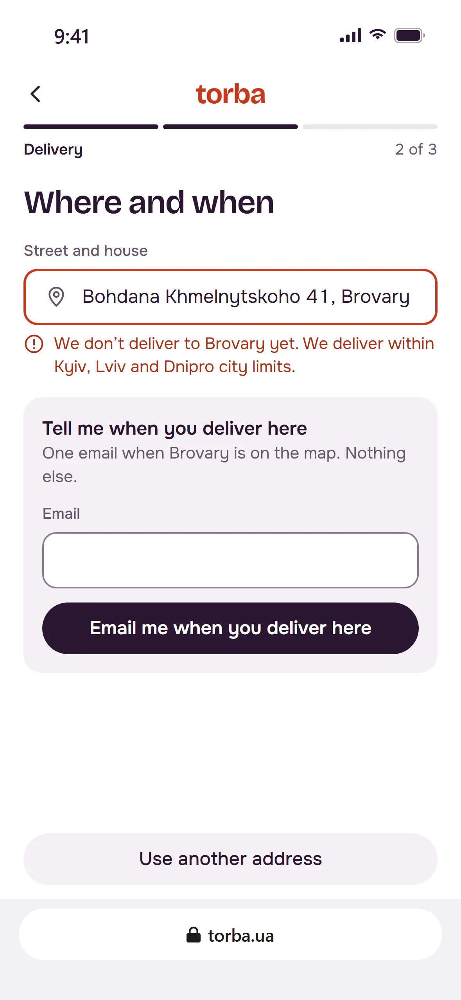
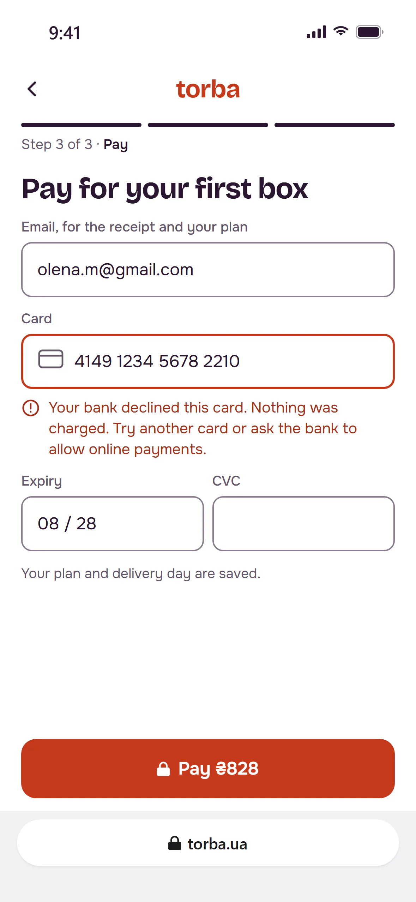
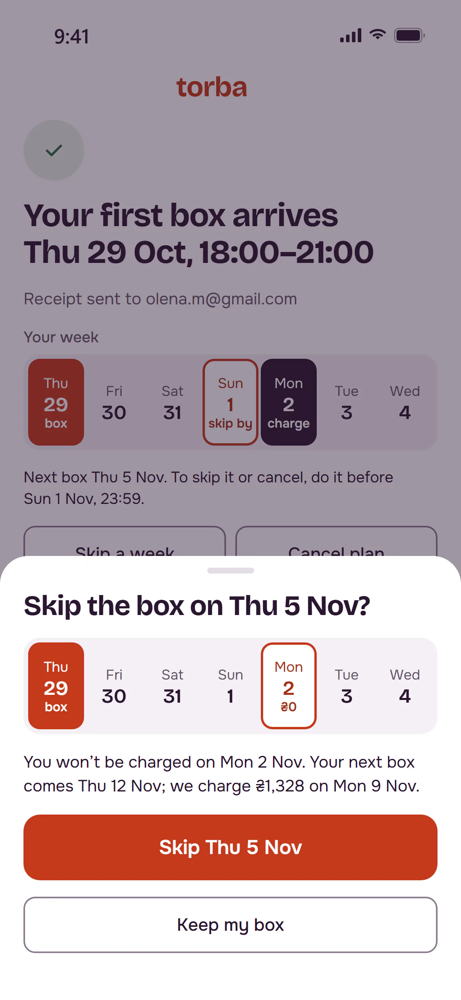
Result
In the lab, the redesign won both tasks. Twelve people tried both versions on their own phones, half starting with each. Ordering for Thursday went from 9 of 12 to 11 of 12, in 2:35 instead of 4:10. Finding next week’s price and how to skip it went from 4 of 12 to 10 of 12. Errors fell from 31 to 12. Four people read “Skip or cancel” as one action, so it became two buttons before the A/B.
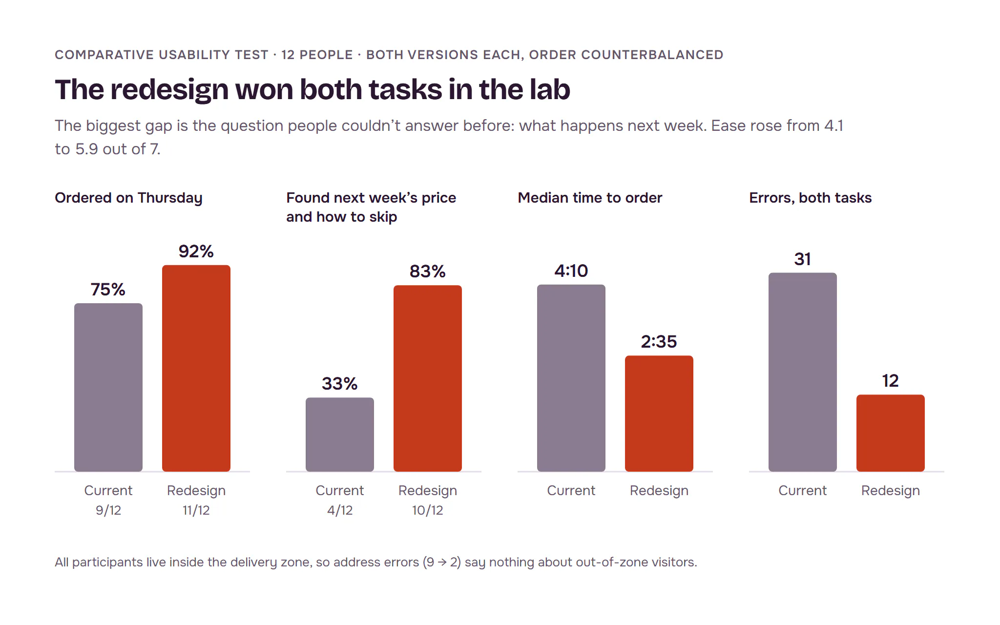
In the A/B, the lift was real and small. We pre-registered one metric, checkout conversion, with a minimum detectable effect of +2 points: 8,592 visitors per arm, 14 days fixed, no peeking, sample ratio checked daily. Results: 31.4% to 33.5%, +2.1 points, 95% interval +0.7 to +3.5. Search and direct traffic carried it: +3.1 points.
The surprise was in a guardrail. Promo-ad traffic barely converted better (+0.7, not significant). But it skipped or cancelled before the second box much less: 24.1% to 17.6%. Across the week-1 cohort that guardrail fell from 18.9% to 15.2%. The weekly price shown upfront filtered out people who came only for −40%. Refunds, first order value and errors stayed flat. We shipped to everyone with a 5% holdout to watch the third box.
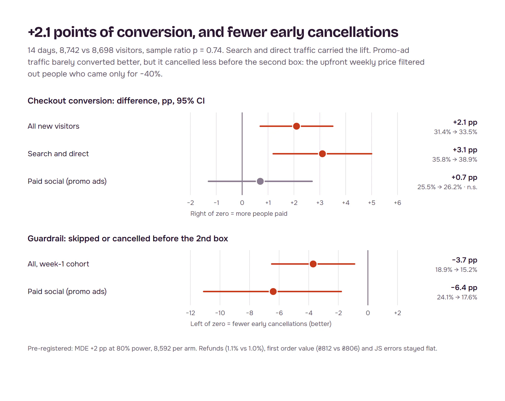
One hypothesis failed. The one-screen address with autocomplete looked fixed in the lab: address errors fell from 9 to 2. In the A/B the delivery step didn’t move: 80.8% of people finished it before, 80.4% after. The new form was the first to log the zone check, and it showed why: 61% of people leaving that step had typed an address outside the delivery zone. They weren’t lost to the form. They were never going to get a box. Our twelve testers all lived inside the zone, so the lab could not see it. The next iteration checks delivery on the landing page, before checkout, and the ads exclude places we don’t serve.
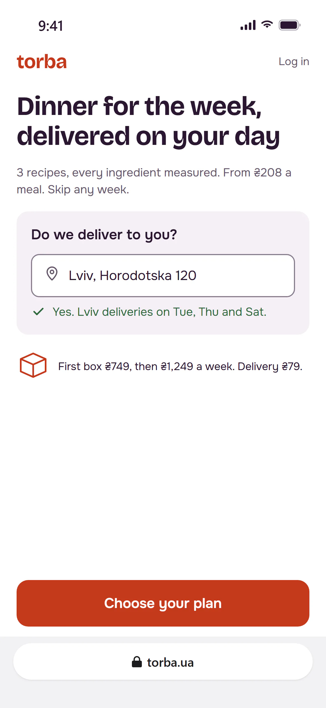
What I learned
- Split a drop by cause before you design for it. The address step lost 15 points, but most of those people lived where we don’t deliver. No form fixes that.
- A lab test picks the version; only traffic sizes the effect. Ordering errors fell by more than half in the lab; conversion rose by 2.1 points.
- Guardrails can carry the good news. The segment that didn’t convert better cancelled less, and that’s the argument I would take to marketing about the −40% ads.